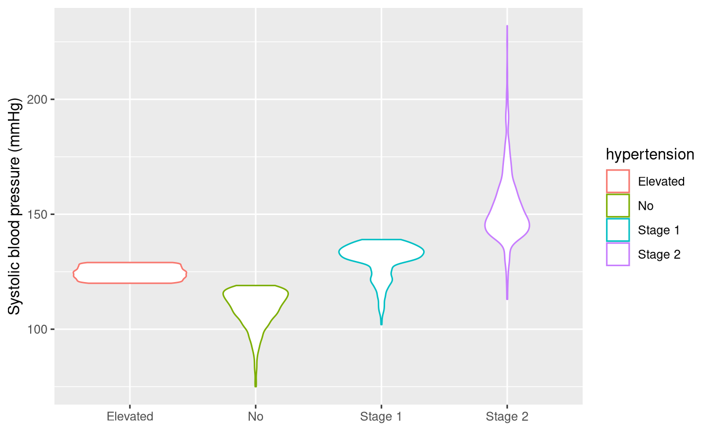

library(ggplot2)
nhanes <- read.csv('nhanes_l.csv')Homework 6
- At the top of a new script, include code for loading
ggplot2and for importing thenhanes_l.csvdata file. Run that code.
TipSolution
In Exercise 3, we used
replace()to define missing values for the alcohol-use variable. An alternate way to define missing values is to combineis.na()and object assignment, as shown in the code below.nhanes$alcohol_use <- nhanes$alq130 is.na(nhanes$alcohol_use) <- (nhanes$alcohol_use == 777) | (nhanes$alcohol_use == 999)In the first line, we use object assignment to copy the original alcohol-use variable,
alq130, to a new variable,alcohol_use.On the right-hand side of the second line, we use a logical object to define the desired missingness. We then use object assignment to redefine missingness. Notice that
is.na()is on the left-hand side of the object assignment, and recall that it is aTRUE/FALSEvector indicating whether values are missing. (If you are wondering: the object assignment in this line will preserve any existing missingness inalcohol_use, and add the additional missing values defined by the right-hand side.)Copy and paste the above code into your script. Run the code. Verify that the code works as intended.
TipSolution
table(nhanes$education, useNA = 'always')
#|
#| 9th-11th grade College degree or later
#| 666 2625
#| Earlier than 9th grade High-school graduate or GED
#| 373 1749
#| Some college or AA degree <NA>
#| 2370 370
table(nhanes$dmdeduc2, useNA = 'always')
#|
#| 1 2 3 4 5 9 <NA>
#| 373 666 1749 2370 2625 11 359- Make a violin plot of systolic blood pressure (
bpxosy1) versus hypertension status (hypertension), subsetting the data to individuals who are 60 years of age (ridageyr) or older and do not have a missing value ofhypertension.
TipSolution
ggplot(
subset(nhanes, ridageyr >= 60 & !is.na(hypertension)),
aes(x = bpxodi1, y = bpxosy1, color = hypertension)
) +
geom_point() +
labs(x = 'Diastolic blood pressure (mmHg)', y = 'Systolic blood pressure (mmHg)', color =
'Hypertension')
There are several ways to avoid dollar-sign notation in R. One method is to use
with(), as follows:nhanes$ltpa_vigorous <- with(nhanes, replace(pad820, pad820 == 7777 | pad820 == 9999, NA))The first argument is the data object,
nhanes. The second argument is a single R statement (“sentence”), with dollar-sign notation omitted.Copy the above code into your script. Run the code.
table()the new variable.
Warning
You cannot use with() on the left-hand side of object assignment.
Note
A more popular way to avoid dollar-sign notation is piping, which I discuss in Data Wrangling in R.
TipSolution
table(nhanes$ltpa_vigorous)
#|
#| 1 2 3 4 5 6 7 8 10 12 15 20 25 30 32 35
#| 12 3 6 2 36 2 1 2 108 5 190 212 30 909 1 12
#| 40 45 46 50 55 60 70 75 90 100 105 120 150 180 240 300
#| 70 262 1 19 3 1064 5 13 145 2 3 364 4 93 49 21
#| 360 420 480 540 600 660 900
#| 10 1 8 1 1 1 2- Use
table()withis.na()to check how many people are missing a measurement of height (bmxht).
TipSolution
table(is.na(nhanes$bmxht))
#|
#| FALSE TRUE
#| 6262 1891- Use
prop.table(),table(), andis.na()to examine whether missingness of systolic blood pressure (bpxosy1) differs by smoking status (smoking). In other words: what percent of smokers, and what percent of non-smokers, are missing a measurement of systolic blood pressure?
TipSolution
prop.table(table(nhanes$smoking, is.na(nhanes$bpxosy1))) * 100
#|
#| FALSE TRUE
#| History of smoking 29.99631 9.93720
#| No 45.28999 14.77651The first argument of
subset()can be a vector rather than a data frame. For example, to list the identification numbers of people who are smokers:subset(nhanes$seqn, nhanes$smoking == 'History of smoking')Use
subset()to list measurements of systolic blood pressure (bpxosy1) among people who have Stage 2 hypertension (hypertension).
TipSolution
subset(nhanes$bpxosy1, nhanes$hypertension == 'Stage 2')
#| [1] 135 143 130 145 154 139 157 152 151 167 141 151 142 153 162 146 147 121
#| [19] 146 144 143 159 131 158 148 126 193 180 159 136 151 142 121 154 130 187
#| [37] 140 147 127 123 165 142 150 152 130 149 142 153 158 148 161 157 195 149
#| [55] 168 148 177 134 147 156 145 133 171 140 180 138 153 166 141 175 147 148
#| [73] 211 131 155 153 151 141 126 151 170 134 122 157 141 164 142 173 153 181
#| [91] 126 141 141 171 137 170 142 143 141 164 190 145 143 147 145 147 143 117
#| [109] 162 127 142 145 157 149 156 180 142 127 141 154 115 158 149 146 144 147
#| [127] 138 141 130 147 131 147 158 149 155 146 147 141 140 147 188 126 152 121
#| [145] 147 142 144 149 128 134 140 151 143 148 144 138 155 142 137 130 115 165
#| [163] 156 144 145 147 148 143 154 150 140 147 141 147 141 147 148 202 151 157
#| [181] 143 141 126 122 148 146 135 162 174 138 141 168 139 152 148 137 153 158
#| [199] 155 140 145 150 146 147 146 134 174 139 154 140 152 161 135 149 141 148
#| [217] 181 155 145 143 145 136 141 177 113 134 138 142 123 148 146 133 129 126
#| [235] 123 144 130 141 131 166 143 147 147 141 232 154 155 155 152 162 168 173
#| [253] 155 121 202 145 130 154 173 191 185 180 145 142 142 156 158 151 119 140
#| [271] 126 152 128 152 140 153 155 173 146 162 155 136 153 140 140 161 138 152
#| [289] 147 144 126 165 147 142 146 224 154 139 117 143 142 120 137 122 161 144
#| [307] 133 147 131 159 123 147 148 148 142 140 148 117 144 135 158 159 143 165
#| [325] 143 147 143 182 143 144 166 141 143 134 180 142 145 140 156 143 140 133
#| [343] 141 132 169 124 121 121 150 141 131 147 131 143 134 150 124 145 153 144
#| [361] 146 150 140 161 155 149 145 146 184 160 164 141 152 141 143 146 150 143
#| [379] 148 128 148 161 141 216 140 143 158 126 148 122 134 130 142 124 141 165
#| [397] 173 153 162 167 139 152 142 148 148 148 151 144 148 145 182 140 147 192
#| [415] 138 149 150 141 131 132 178 156 154 168 163 132 153 143 141 166 137 131
#| [433] 146 147 145 145 153 125 162 142 158 156 140 142 147 168 145 125 146 147
#| [451] 173 163 138 160 152 145 129 137 175 189 143 141 153 149 142 152 151 128
#| [469] 141 158 123 160 136 160 160 141 140 166 153 145 149 147 142 132 147 162
#| [487] 139 162 171 113 148 158 150 142 139 190 127 152 164 170 133 146 117 134
#| [505] 116 137 189 157 150 193 153 142 169 132 146 142 162 145 191 134 121 159
#| [523] 155 149 153 133 180 164 150 156 142 150 172 144 137 161 143 155 123 162
#| [541] 153 225 209 162 150 140 148 140 145 131 163 183 124 144 145 143 139 138
#| [559] 137 174 141 147 166 145 180 159 159 145 180 141 131 143 146 146 113 146
#| [577] 115 143 146 163 133 133 180 143 141 121 120 125 134 159 142 142 140 159
#| [595] 126 120 143 150 150 150 141 143 159 158 165 156 137 153 143 144 143 166
#| [613] 146 151 149 143 144 143 132 151 139 166 142 145 143 162 181 144 149 138
#| [631] 131 162 154 133 144 129 123 148 124 160 145 143 145 144 140 125 203 147
#| [649] 151 145 123 148 193 144 136 129 144 140 166 172 125 142 163 133 140 160
#| [667] 141 147 159 146 143 143 146 203 128 153 142 163 139 140 147 147 139 165
#| [685] 144 151 148 118 154 148 155 140 120 132 129 119 158 181 136 145 141 160
#| [703] 202 118 201 148 167 193 151 162 151 180 156 156 153 159 151 146 152 132
#| [721] 150 140 140 152 131 149 140 195 148 176 148 153 155 152 141 160 143 152
#| [739] 141 210 168 157 153 156 158 179 157 156 178 128 143 158 156 126 126 189
#| [757] 146 177 145 135 133 150 138 161 176 199 160 141 156 158 154 147 137 155
#| [775] 146 169 163 171 140 141 141 138 143 153 144 172 133 139 140 139 119 135
#| [793] 146 151 147 139 146 145 148 129 142 137 141 195 170 145 175 140 134 128
#| [811] 150 141 155 159 153 156 153 130 164 145 154 128 141 154 152 156 176 147
#| [829] 158 175 137 144 144 145 159 189 158 159 160 140 145 144 140 137 140 154
#| [847] 142 171 154 148 114 147 159 127 157 185 122 149 163 130 117 127 136 178
#| [865] 143 150 130 171 148 168 147 150 166 182 164 154 148 157 146 177 152 141
#| [883] 167 159 111 153 162 137 142 142 148 154 158 118 140 145 141 141 150 154
#| [901] 141 163 171 161 163 133 141 170 150 155 141 131 141 163 159 151 155 142
#| [919] 145 151 156 129 152 161 134 157 153 143 168 149 145 151 152 145 148 157
#| [937] 130 145 169 152 146 142 131 160 152 145 150 166 157 164 147 138 144 153
#| [955] 144 142 175 143 148 152 148 141 141 141 132 141 152 161 113 149 145 155
#| [973] 166 135 133 137 125 138 155 179 153 143 169 153 170 146 162 126 162 144
#| [991] 143 140 123 133 153 156 149 144 141 147 152 116 130 146 142 142 135 159
#| [1009] 192 162 136 163 148 146 141 141 153 141 113 118 135 142 150 147 143 149
#| [1027] 130 141 146 148 141 134 167 141 141 130 134 155 153 147 145 197 157 123
#| [1045] 147 174 143 150 149 152 146 164 194 173 170 134 143 145 130 158 148 143
#| [1063] 143 132 137 132 136 145 177 131 170 115 149 141 130 149 142 152 150 127
#| [1081] 147 121 133 147 169 158 122 157 131 144 150 155 142 169 139 130 188 152
#| [1099] 171 170 150 160 156 162 167 166 158 134 137 159 133 161 162 119 159 154
#| [1117] 153 175 136 157 140 141 144 150 129 148 144 148 170 163 152 154 146 154
#| [1135] 153 121 124 139 153 146 147 145 196 154 192 147 147 153 155 181 149 177
#| [1153] 145 153 130 142 144 145 162 180 147 147 130 172 140 148 148 157 123 140
#| [1171] 141 182 141 141 155 153 120 134 161 161 146 147 211 141 144 142 131 167
#| [1189] 147 141 149 162 150 142 145 150 144 161 164 146 139 140 157 165 180 140
#| [1207] 200 171 196 154 147 152 144 156 152 142